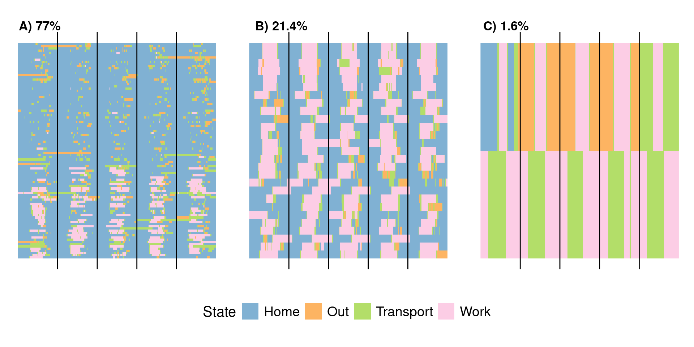
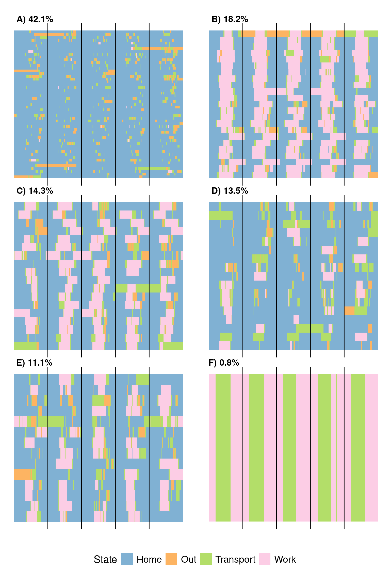

library(readr)
library(dplyr)
library(tibble)
library(ggplot2)
library(cowplot)
library(tidyr)
source('src/plot_functions.R')
source('scripts/run_mat_hier.R')Week Sequence Analysis Figures
Load packages and source file
Note: to run this, you can either directly load in nTreeClus results files in results/amdc_week_ntrees.csv OR recreate this saved file by running nTreeClus on daynamica data with run_nTreeClus_daynamica.ipynb.
Run/load in clustering results and prep data
out2 <- run_sim('clean_data/clean_week_seqs.csv', 'clean_data/clean_week_distmat.rds', 2, 9)
metric2 <- out2[[1]]
df2 <- out2[[2]]
ntrees_df2 <- read_csv('results/amdc_week_ntrees.csv') %>%
rename(seq = seqs)df2 <- df2 %>%
rename(seq = seqs) %>%
mutate(seq_num = seq(1, nrow(df2))) %>%
mutate(uniq_id = paste0(user_id, '_', seq_num))
ntrees_df2 <- ntrees_df2 %>%
rename(seq_num = `...1`) %>%
mutate(uniq_id = paste0(user_id, '_', seq_num))
hier_las2 <- create_lasagna_df('clust4', df2)
mat_las2 <- create_lasagna_df('clust6_EV12', df2)
ntrees_las2 <- create_lasagna_df('ntrees_DT', ntrees_df2)Get legend + white space for all plots
plot_df <- mat_las2 %>%
mutate(State = ifelse(State == 'H', 'Home', ifelse(State == 'O', 'Out',
ifelse(State == 'T', 'Transport', ifelse(State == 'W', 'Work', NA)))))
p1 <- plot_lasagna(plot_df, 'clust6_EV12', 1) + theme(legend.position="bottom", legend.title=element_text(size=15),
legend.text=element_text(size=14))
legend_b <- cowplot::get_plot_component(p1, 'guide-box-bottom')
white_space <- ggplot() +
theme_void()Contribution of each adjacency matrix compartment to the principal axes
week_df <- read_csv('clean_data/clean_week_seqs.csv', show_col_types = FALSE)
indices <- list(c(1))
type <- c('keep')
trans_res <- final_gen(week_df$seqs, indices, type)
trans_mat <- trans_res[["vecs"]]$`1`
trans_mat_s <- scale(trans_mat, scale = FALSE)
svd_res <- svd(trans_mat_s)
vec <- 100/svd_res$d^2
XV2 <- (trans_mat_s %*% svd_res$v)^2
indv_contrib <- t(t(XV2)*vec)
rownames(indv_contrib) <- apply(expand.grid(c('H', 'O', 'T', 'W'), c('H', 'O', 'T', 'W')), 1, function(x){paste0(x, collapse = '')})
indv_contrib[,1:2] [,1] [,2]
HH 91.49911076 1.9117695
OH 0.70003975 0.5362547
TH 0.59759258 0.5007621
WH 0.70006288 0.5246362
HO 0.69956385 0.5412621
OO 0.12099364 0.2557411
TO 0.61114759 0.5285413
WO 0.70089065 0.5284693
HT 0.59851789 0.5025939
OT 0.60985122 0.5308779
TT 0.01407098 0.6753571
WT 0.65923634 0.3831872
HW 0.69902512 0.5154704
OW 0.70166520 0.5329210
TW 0.65930152 0.3868234
WW 0.42893004 91.1453330Figure 3
mat1 <- plot_lasagna_week(mat_las2, 'clust6_EV12', 3) +
theme(legend.position="none", axis.text.x = element_blank(), axis.ticks.x = element_blank())
mat2 <- plot_lasagna_week(mat_las2, 'clust6_EV12', 4) +
theme(legend.position="none", axis.text.x = element_blank(), axis.ticks.x = element_blank())
mat3 <- plot_lasagna_week(mat_las2, 'clust6_EV12', 2) +
theme(legend.position="none", axis.text.x = element_blank(), axis.ticks.x = element_blank())
mat_p <- plot_grid(mat1, mat2, mat3, labels = c('A) 42.1%', 'B) 18.2%', 'C) 11.1%'), nrow = 2,label_y = 1.04, label_x = -0.01, label_size = 11)
final <- plot_grid(white_space, mat_p, legend_b, white_space, axis = 'l', nrow = 4, rel_heights = c(1, 20, 1,1))
final
Supplementary Figure 8
sort_vals <- ntrees_df2 %>%
group_by(ntrees_DT)%>%
summarize(n = n()/nrow(df2)) %>%
arrange(desc(n))
all_plots <- lapply(sort_vals$ntrees_DT, function(x){
plot <- plot_lasagna_week(ntrees_las2, 'ntrees_DT', x) +
theme(legend.position="none", axis.text.x = element_blank(), axis.ticks.x = element_blank())
})
percs <- round(sort_vals$n, 3)*100
letters <- c('A) ', 'B) ', 'C) ' )
labels <- vector(length = length(percs))
for(i in seq(1,length(percs))){labels[i] <- paste0(letters[i], as.character(percs[i]), '%')}
mat_p <- plot_grid(plotlist = all_plots, labels = labels, nrow =1,label_y = 1.04, label_x = -0.01, label_size = 13)
final <- plot_grid(white_space, mat_p, white_space, legend_b, white_space, axis = 'l', nrow = 5, rel_heights = c(0.75, 7, 0.75, .4,0.8))
final
Supplementary Figure 9
sort_vals <- df2 %>%
group_by(clust6_EV12)%>%
summarize(n = n()/nrow(df2)) %>%
arrange(desc(n))
all_plots <- lapply(sort_vals$clust6_EV12, function(x){
plot <- plot_lasagna_week(mat_las2, 'clust6_EV12', x) +
theme(legend.position="none", axis.text.x = element_blank(), axis.ticks.x = element_blank())
})
percs <- round(sort_vals$n, 3)*100
percs[2] <- 18.2 #so it sums to 100
letters <- c('A) ', 'B) ', 'C) ' , 'D) ', 'E) ', 'F) ')
labels <- vector(length = length(percs))
for(i in seq(1,length(percs))){labels[i] <- paste0(letters[i], as.character(percs[i]), '%')}
mat_p <- plot_grid(plotlist = all_plots, labels = labels, nrow = 3,label_y = 1.04, label_x = -0.01, label_size = 13)
final <- plot_grid(white_space, mat_p, white_space, legend_b, white_space, axis = 'l', nrow = 5, rel_heights = c(0.75, 20, 0.75, .4,0.8))
final